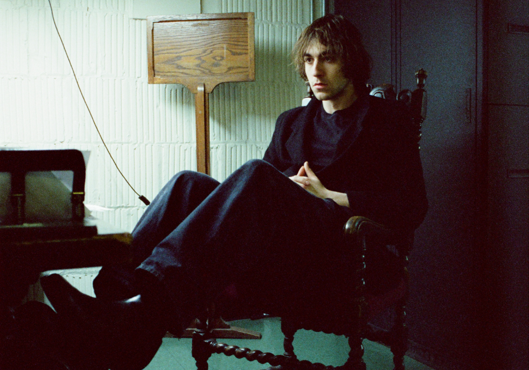

Alexa Viscius: Portraits of People Who Make Music
Whether shooting from the vast wilds of Alaska, or the familiar Chicago alleys of her hometown, Alexa Viscius manages to create film portraits that feel like peering into a keyhole. Candid shots reveal coveted glimpses of beloved musicians: like New York Phenom Cameron Winter making adjustments to his musical arrangements backstage before his monumental solo performance at Hyde Park’s Rockefeller Church, or the sensational young Chicago band Horsegirl, running down a hill with a certain excitement and teenage-abandon of a group on the cusp of their breakout record, or a contemplative moment shared between longtime friends and prolific Chicago indie rockers Max Kakacek and Julien Elrich of Whitney, sitting in Kackek’s grandparent’s bedroom in Portman, Wisconsin. Many of her portraits, taken at her longtime studio in the historic Flatiron building in Wicker Park Chicago, retain that same sense of tenderness: A portrait of renowned New York musician, and frequent collaborator, Adrienne Lenker of Big Thief, displays a sense of intimacy and trust. It’s a trust that has been earned through 20+ years of mastering her craft, allowing her subjects to open up, revealing themselves like flowers. From legendary Chicago DIY venues of yore, to international stages and all those quiet moments in between, she’s been there thru it all, with her finger on the shutter, capturing the music and the people that make it.